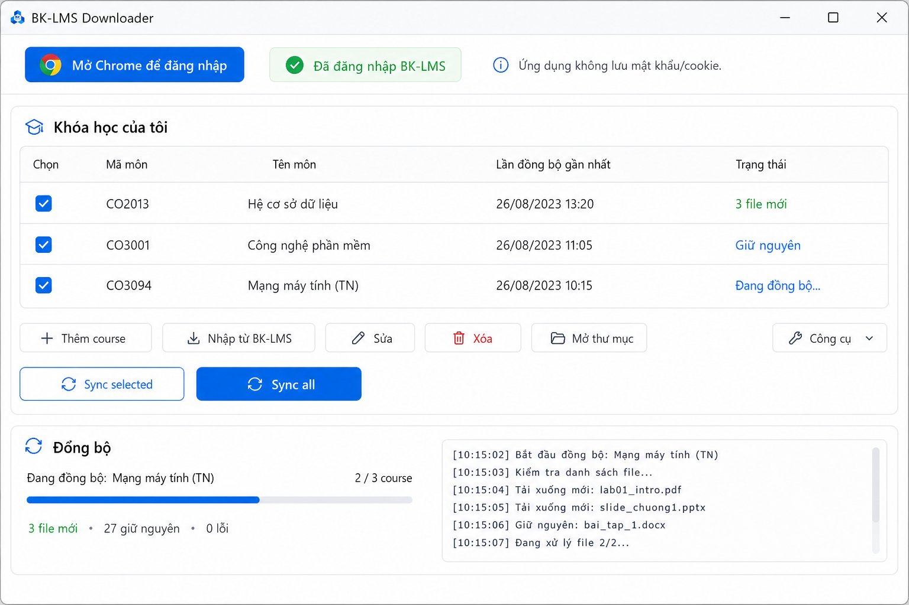

Nhập môn nhanh
Đọc danh sách môn đã đăng ký từ BK-LMS hoặc thêm môn bằng URL.
Dành cho sinh viên HCMUT
Nhập môn học, đồng bộ tài liệu vào thư mục gọn gàng và tùy chọn tạo AI Study Pack riêng cho từng môn — tất cả trên máy của bạn.
v1.4.0 · GitHub Releases có bản mới nhất. Microsoft Store có thể cập nhật chậm hơn; không cần cài Python cho bản ứng dụng đóng gói.
Xem nhanh

Video hướng dẫn đang được chuẩn bị. Ảnh trên là giao diện ứng dụng thực tế.
Cách hoạt động
Tính năng chính
Đọc danh sách môn đã đăng ký từ BK-LMS hoặc thêm môn bằng URL.
Chọn từng môn bằng checkbox, đồng bộ từng phần hoặc toàn bộ danh sách.
Đồng bộ lại sau này mà không tải lại những file đã giữ nguyên.
Thông tin môn, bài giảng, lab, bài tập và tài liệu tham khảo được phân nhóm rõ ràng.
Yêu cầu hủy không xóa các file đã hoàn tất và file không đổi được giữ lại ở lần sau.
Xóa môn khỏi danh sách ứng dụng không bao giờ xóa thư mục bạn đã tải.
Tạo hoặc cập nhật một ZIP học riêng cho mỗi môn đã đồng bộ.
Có thể bổ sung đề Midterm/Final công khai để tham khảo dạng đánh giá lịch sử.
AI Study Pack
Sau khi đồng bộ, bạn có thể tạo hoặc cập nhật <CourseName>_AI_Study_Pack.zip trên máy. Khi cần, bạn tự tải ZIP đó lên ChatGPT để học cùng tài liệu môn.
Khi tạo hoặc cập nhật AI Study Pack, bạn có thể tùy chọn tìm thêm đề Midterm/Final công khai. Đề cũ chỉ giúp tham khảo dạng câu hỏi và mức độ nhấn mạnh của các kỳ trước; không dự đoán hay đảm bảo nội dung đề thi tương lai.
Không cần đăng nhập Google, OAuth, API key hoặc quyền Drive riêng. Nếu Coursewave không sẵn sàng, Study Pack cục bộ vẫn hoạt động.
Riêng tư và cục bộ
Tải về
Microsoft Store là kênh cài đặt Windows được khuyến nghị. GitHub Releases có bản Windows, macOS arm64 và macOS x64.
AI Study Pack an toàn và gọn hơn Khi kiểm chứng được biểu diễn trùng lặp cục bộ, ứng dụng có thể giảm phần trình chiếu dư thừa; mức giảm tùy theo từng course.
Hỏi đáp
Không. Bạn đăng nhập trực tiếp trong Chrome trên trang BK-LMS.
Không cần cho bản ứng dụng đóng gói từ Microsoft Store hoặc GitHub Releases.
Không. Ứng dụng chỉ tạo ZIP cục bộ; bạn tự chọn có tải ZIP đó lên ChatGPT hay không.
Không. Tùy chọn này chỉ xem nguồn Coursewave và Google Drive công khai; không dùng OAuth, API key hay quyền Drive riêng.
Không. Đề cũ chỉ dùng để tham khảo dạng câu hỏi, phong cách đánh giá và trọng tâm lịch sử; tài liệu giảng viên vẫn là nguồn chính.
GitHub Releases có bản v1.4.0 mới nhất; Microsoft Store có thể cập nhật chậm hơn trong thời gian chứng nhận.
Không. Đây là dự án mã nguồn mở không chính thức, không liên kết với HCMUT hoặc BK-LMS.